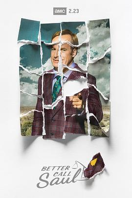

风骚律师 第五季 / Better Call Saul Season 5
又名：绝命律师 / 索尔最高 / 索尔热线
感觉后面至少还有两季，但是演员已经老很多了 =。=
作品信息
| 导演 | 布朗温·休斯 / 诺维托·巴尔瓦 / 迈克尔·莫里斯 / 戈登·史密斯 / 吉姆·麦凯 / 梅丽莎·伯恩斯坦 / 文斯·吉利根 / 托马斯·施纳泽 / 皮特·古尔德 |
| 编剧 | 文斯·吉利根 / 皮特·古尔德 / 艾莉森·塔特洛克 / 安·彻基斯 / 戈登·史密斯 / 托马斯·施纳泽 / 阿莉尔·莱文 / 马里恩·德尔 |
| 主演 | 鲍勃·奥登科克 / 乔纳森·班克斯 / 蕾亚·塞洪 / 帕特里克·法比安 / 迈克尔·曼多 / 吉安卡罗·埃斯波西托 / 马克·马戈利斯 / 凯瑞·康顿 / 托尼·达尔顿 / 乔希·法德姆 / 耶利米·比特绥 / 朱利安·邦菲格里奥 / 胡安·卡洛斯·坎图 / 迪恩·诺里斯 / 拉韦尔·克劳福德 / 罗兰·巴克三世 / 蒂莫西·卡尔 / 阿利森·金 |
| 类型 | 剧情 / 犯罪 |
| 制片国家/地区 | 美国 |
| 语言 | 英语 |
| 首播 | 2020-02-23(美国) |
| 季数 | 5 |
| 集数 | 10 |
| 单集片长 | 54分钟 |
| IMDb | tt8772146 |
说过什么
2020-09-12 22:54:54
看过 · 时间来自广播，短评来自标记页
感觉后面至少还有两季，但是演员已经老很多了 =。=
2020-09-09 21:29:30
广播 · 在看
Saul Goodman is born
最后一次看到是 2026-08-01T11:05:29+10:00 · 豆瓣原页